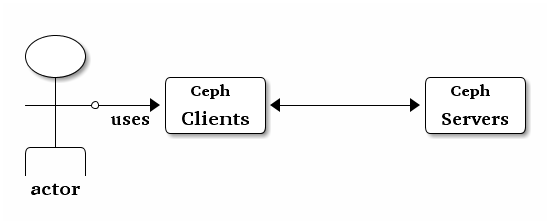

用户管理¶
本文档叙述了 Ceph 客户端的用户身份，及其与 Ceph 存储集群的认证和授权。用户可以是个人或系统角色（像应用程序），它们用 Ceph 客户端和 Ceph 服务器守护进程交互。

When Ceph runs with authentication and authorization enabled (enabled by
default), you must specify a user name and a keyring containing the secret key
of the specified user (usually via the command line). If you do not specify a
user name, Ceph will use client.admin as the default user name. If you do
not specify a keyring, Ceph will look for a keyring via the keyring setting
in the Ceph configuration. For example, if you execute the ceph health
command without specifying a user or keyring:
ceph health
Ceph interprets the command like this:
ceph -n client.admin --keyring=/etc/ceph/ceph.client.admin.keyring health
另外你也可以用 CEPH_ARGS 环境变量来避免多次输入用户名和密钥。
For details on configuring the Ceph Storage Cluster to use authentication, see Cephx 配置参考. For details on the architecture of Cephx, see 体系结构——高可用性认证.
背景¶
Irrespective of the type of Ceph client (e.g., Block Device, Object Storage, Filesystem, native API, etc.), Ceph stores all data as objects within pools. Ceph users must have access to pools in order to read and write data. Additionally, Ceph users must have execute permissions to use Ceph’s administrative commands. The following concepts will help you understand Ceph user management.
用户¶
A user is either an individual or a system actor such as an application. Creating users allows you to control who (or what) can access your Ceph Storage Cluster, its pools, and the data within pools.
Ceph has the notion of a type of user. For the purposes of user management,
the type will always be client. Ceph identifies users in period (.)
delimited form consisting of the user type and the user ID: for example,
TYPE.ID, client.admin, or client.user1. The reason for user typing
is that Ceph Monitors, OSDs, and Metadata Servers also use the Cephx protocol,
but they are not clients. Distinguishing the user type helps to distinguish
between client users and other users–streamlining access control, user
monitoring and traceability.
Sometimes Ceph’s user type may seem confusing, because the Ceph command line
allows you to specify a user with or without the type, depending upon your
command line usage. If you specify --user or --id, you can omit the
type. So client.user1 can be entered simply as user1. If you specify
--name or -n, you must specify the type and name, such as
client.user1. We recommend using the type and name as a best practice
wherever possible.
Note
A Ceph Storage Cluster user is not the same as a Ceph Object Storage user or a Ceph Filesystem user. The Ceph Object Gateway uses a Ceph Storage Cluster user to communicate between the gateway daemon and the storage cluster, but the gateway has its own user management functionality for end users. The Ceph Filesystem uses POSIX semantics. The user space associated with the Ceph Filesystem is not the same as a Ceph Storage Cluster user.
授权（能力）¶
Ceph 用能力（ capabilities, caps ）这个术语来描述给已认证用户的授权，这样才能使用监视器、 OSD 、和元数据服务器的功能。能力也用于限制对一存储池内的数据、存储池内某个名字空间、或由应用标签所标识的一系列存储池的访问。 Ceph 的管理用户可在创建或更新某用户时赋予他能力。
能力的语法符合下面的形式：
{daemon-type} '{cap-spec}[, {cap-spec} ...]'
监视器能力： 监视器能力包括
r、w、x访问选项或profile {name}，例如：mon 'allow {access-spec} [network {network/prefix}]' mon 'profile {name}'
{access-spec}语法如下：* | all | [r][w][x]
可选项
{network/prefix}是个标准网络名和前缀长度（ CIDR 表示法，如10.3.0.0/16）。如果设置了，此能力就仅限于从这个网络连接过来的客户端。OSD 能力： OSD 能力包括
r、w、x、class-read、class-write访问选项和profile {name}。另外， OSD 能力还支持存储池和命名空间的配置。osd 'allow {access-spec} [{match-spec}] [network {network/prefix}]' osd 'profile {name} [pool={pool-name} [namespace={namespace-name}]] [network {network/prefix}]'
其中，
{access-spec}语法是下列之一：* | all | [r][w][x] [class-read] [class-write] class {class name} [{method name}]可选的
{match-spec}语法是下列之一：pool={pool-name} [namespace={namespace-name}] [object_prefix {prefix}] [namespace={namespace-name}] tag {application} {key}={value}
可选的
{network/prefix}是一个标准网络名、且前缀长度遵循 CIDR 表示法（如10.3.0.0/16）。如果配置了，对此能力的使用就仅限于从这个网络连入的客户端。元数据服务器能力： 对于管理员，设置
allow *。对于其它的所有用户，如 CephFS 客户端，参考 CephFS 客户端能力 。
Note
Ceph 对象网关守护进程（ radosgw ）是 Ceph 存储集群的一种客户端，所以它没被表示成一种独立的 Ceph 存储集群守护进程类型。
下面描述了各种访问能力。
allow
- 描述
在守护进程的访问设置之前，仅对 MDS 隐含
rw。
r
- 描述
授予用户读权限，监视器需要它才能搜刮 CRUSH 图。
w
- 描述
授予用户写对象的权限。
x
- 描述
授予用户调用类方法的能力，即同时有读和写，且能在监视器上执行
auth操作。
class-read
- 描述
授予用户调用类读取方法的能力，
x的子集。
class-write
- 描述
授予用户调用类写入方法的能力，
x的子集。
*, all
- 描述
授权此用户读、写和执行某守护进程/存储池，且允许执行管理命令。
profile osd （仅用于监视器）
- 描述
授权一个用户以 OSD 身份连接其它 OSD 或监视器。授予 OSD 们允许其它 OSD 处理复制、心跳流量和状态报告。
profile mds （仅用于监视器）
- 描述
授权一个用户以 MDS 身份连接其它 MDS 或监视器。
profile bootstrap-osd （仅用于监视器）
- 描述
授权一用户自举引导 OSD 的权限。授予部署工具，像
ceph-volume、ceph-deploy等等，这样它们在自举引导 OSD 时就有权限增加密钥了。
profile bootstrap-mds （仅用于监视器）
- 描述
授权一用户自举引导元数据服务器的权限。授予像
ceph-deploy一样的部署工具，这样它们在自举引导元数据服务器时就有权限增加密钥了。
profile bootstrap-rbd （仅用于监视器）
- 描述
授予一用户自举引导 RBD 用户的权限。比如对于
ceph-deploy之类的工具，让它们在自举引导一个 RBD 用户时有权限新增密钥等等。
profile bootstrap-rbd-mirror （仅用于监视器）
- 描述
Gives a user permissions to bootstrap an
rbd-mirrordaemon user. Conferred on deployment tools such asceph-deploy, etc. so they have permissions to add keys, etc. when bootstrapping anrbd-mirrordaemon.
profile rbd （用于监视器和 OSD ）
- 描述
Gives a user permissions to manipulate RBD images. When used as a Monitor cap, it provides the minimal privileges required by an RBD client application. When used as an OSD cap, it provides read-write access to an RBD client application.
profile rbd-mirror （仅用于监视器）
- 描述
Gives a user permissions to manipulate RBD images and retrieve RBD mirroring config-key secrets. It provides the minimal privileges required for the
rbd-mirrordaemon.
profile rbd-read-only （仅用于 OSD ）
- 描述
授予一个用户访问 RBD 映像的只读权限。 Manager 能力支持可选的
pool和namespace关键字参数。
存储池¶
存储池是用户存储数据的逻辑分区。在 Ceph 部署中，经常创建存储池作为逻辑分区、用以归类相似的数据。例如，用 Ceph 作为 OpenStack 的后端时，典型的部署通常会创建多个存储池，分别用于存储卷宗、映像、备份和虚拟机，以及用户（如 client.glance 、 client.cinder 等）。
应用程序标签¶
可以将访问限定于指定存储池，正如其应用程序元数据所定义的那样。通配符 * 可以用于 key 参数、 value 参数、或二者。
all 与 * 同义。
命名空间¶
Objects within a pool can be associated to a namespace–a logical group of objects within the pool. A user’s access to a pool can be associated with a namespace such that reads and writes by the user take place only within the namespace. Objects written to a namespace within the pool can only be accessed by users who have access to the namespace.
Note
命名空间主要适用于 librados 之上的应用程序，逻辑分组可减少新建存储池的必要。 Ceph 对象网关（从
luminous 起）就把命名空间用于各种元数据对象。
The rationale for namespaces is that pools can be a computationally expensive
method of segregating data sets for the purposes of authorizing separate sets
of users. For example, a pool should have ~100 placement groups per OSD. So an
exemplary cluster with 1000 OSDs would have 100,000 placement groups for one
pool. Each pool would create another 100,000 placement groups in the exemplary
cluster. By contrast, writing an object to a namespace simply associates the
namespace to the object name with out the computational overhead of a separate
pool. Rather than creating a separate pool for a user or set of users, you may
use a namespace. Note: Only available using librados at this time.
用 namespace 能力可以把访问权限局限于特定的 RADOS 命名空间。命名空间支持有限的通配；如果指定的命名空间最后一个字符是 * ，那就把访问权限授予所有以所提供参数打头的命名空间。
用户的管理¶
用户管理功能赋予 Ceph 存储集群管理员直接从 Ceph 存储集群创建、更新和删除用户的能力。
当你在 Ceph 存储集群中创建或删除用户时，可能得把密钥分发到各客户端，以便加入他们的密钥环。详情见密钥环管理。
罗列用户¶
罗列集群内的用户，用下列命令：
ceph auth ls
Ceph 将列出集群内的所有用户。例如，在一个双节点示例集群中，
ceph auth ls 会显示类似如下的内容：
installed auth entries:
osd.0
key: AQCvCbtToC6MDhAATtuT70Sl+DymPCfDSsyV4w==
caps: [mon] allow profile osd
caps: [osd] allow *
osd.1
key: AQC4CbtTCFJBChAAVq5spj0ff4eHZICxIOVZeA==
caps: [mon] allow profile osd
caps: [osd] allow *
client.admin
key: AQBHCbtT6APDHhAA5W00cBchwkQjh3dkKsyPjw==
caps: [mds] allow
caps: [mon] allow *
caps: [osd] allow *
client.bootstrap-mds
key: AQBICbtTOK9uGBAAdbe5zcIGHZL3T/u2g6EBww==
caps: [mon] allow profile bootstrap-mds
client.bootstrap-osd
key: AQBHCbtT4GxqORAADE5u7RkpCN/oo4e5W0uBtw==
caps: [mon] allow profile bootstrap-osd
注意， TYPE.ID 写法对于用户来说，如 osd.0 表示用户类型是 osd 、其 ID 是 0 ； client.admin 是一个用户类型为 client 、 ID 为 admin （即默认的 client.admin
用户）。还有，每条都有一行 key: <value> 条目、和一或多行
caps: 条目。
你可以给 ceph auth ls 加上 -o {filename} 选项，把输出保存到一个文件。
获取用户¶
To retrieve a specific user, key and capabilities, execute the following:
ceph auth get {TYPE.ID}
For example:
ceph auth get client.admin
You may also use the -o {filename} option with ceph auth get to
save the output to a file. Developers may also execute the following:
ceph auth export {TYPE.ID}
auth export 命令等价于 auth get 。
新增用户¶
Adding a user creates a username (i.e., TYPE.ID), a secret key and
any capabilities included in the command you use to create the user.
A user’s key enables the user to authenticate with the Ceph Storage Cluster.
The user’s capabilities authorize the user to read, write, or execute on Ceph
monitors (mon), Ceph OSDs (osd) or Ceph Metadata Servers (mds).
There are a few ways to add a user:
ceph auth add: This command is the canonical way to add a user. It will create the user, generate a key and add any specified capabilities.ceph auth get-or-create: This command is often the most convenient way to create a user, because it returns a keyfile format with the user name (in brackets) and the key. If the user already exists, this command simply returns the user name and key in the keyfile format. You may use the-o {filename}option to save the output to a file.ceph auth get-or-create-key: This command is a convenient way to create a user and return the user’s key (only). This is useful for clients that need the key only (e.g., libvirt). If the user already exists, this command simply returns the key. You may use the-o {filename}option to save the output to a file.
When creating client users, you may create a user with no capabilities. A user
with no capabilities is useless beyond mere authentication, because the client
cannot retrieve the cluster map from the monitor. However, you can create a
user with no capabilities if you wish to defer adding capabilities later using
the ceph auth caps command.
A typical user has at least read capabilities on the Ceph monitor and read and write capability on Ceph OSDs. Additionally, a user’s OSD permissions are often restricted to accessing a particular pool.
ceph auth add client.john mon 'allow r' osd 'allow rw pool=liverpool'
ceph auth get-or-create client.paul mon 'allow r' osd 'allow rw pool=liverpool'
ceph auth get-or-create client.george mon 'allow r' osd 'allow rw pool=liverpool' -o george.keyring
ceph auth get-or-create-key client.ringo mon 'allow r' osd 'allow rw pool=liverpool' -o ringo.key
Important
如果你给用户分配了访问 OSD 的能力，但是没有限制他可以访问哪些存储池，那么他可以访问集群内的所有存储池！
更改用户能力¶
ceph auth caps 命令可以用来修改指定用户的能力。设置新能力时会覆盖当前能力。查看用户当前的能力可以用 ceph auth get USERTYPE.USERID ；增加能力时应该加上当前已经有的能力，命令格式如下：
ceph auth caps USERTYPE.USERID {daemon} 'allow [r|w|x|*|...] [pool={pool-name}] [namespace={namespace-name}]' [{daemon} 'allow [r|w|x|*|...] [pool={pool-name}] [namespace={namespace-name}]']
例如：
ceph auth get client.john
ceph auth caps client.john mon 'allow r' osd 'allow rw pool=liverpool'
ceph auth caps client.paul mon 'allow rw' osd 'allow rwx pool=liverpool'
ceph auth caps client.brian-manager mon 'allow *' osd 'allow *'
要删除一个能力，你可以重置此能力。如果你想让一个用户无权访问一个之前配置给他的特定守护进程，指定一个空字符串即可。例如：
ceph auth caps client.ringo mon ' ' osd ' '
关于能力请参考授权（能力）。
删除用户¶
要删除一用户，用 ceph auth del 命令：
ceph auth del {TYPE}.{ID}
其中 {TYPE} 是 client 、 osd 、 mon 或 mds
之一， {ID} 是用户名或守护进程的 ID 。
查看用户密钥¶
To print a user’s authentication key to standard output, execute the following:
ceph auth print-key {TYPE}.{ID}
Where {TYPE} is one of client, osd, mon, or mds,
and {ID} is the user name or ID of the daemon.
Printing a user’s key is useful when you need to populate client software with a user’s key (e.g., libvirt).
mount -t ceph serverhost:/ mountpoint -o name=client.user,secret=`ceph auth print-key client.user`
导入用户¶
要导入一个或多个用户，可以用 ceph auth import 命令，并指定一个密钥环：
ceph auth import -i /path/to/keyring
例如：
sudo ceph auth import -i /etc/ceph/ceph.keyring
Note
Ceph 存储集群会新增用户、他们的密钥以及其能力，也会更新已有的用户们、他们的密钥和他们的能力。
密钥环管理¶
When you access Ceph via a Ceph client, the Ceph client will look for a local
keyring. Ceph presets the keyring setting with the following four keyring
names by default so you don’t have to set them in your Ceph configuration file
unless you want to override the defaults (not recommended):
/etc/ceph/$cluster.$name.keyring/etc/ceph/$cluster.keyring/etc/ceph/keyring/etc/ceph/keyring.bin
The $cluster metavariable is your Ceph cluster name as defined by the
name of the Ceph configuration file (i.e., ceph.conf means the cluster name
is ceph; thus, ceph.keyring). The $name metavariable is the user
type and user ID (e.g., client.admin; thus, ceph.client.admin.keyring).
Note
When executing commands that read or write to /etc/ceph, you may
need to use sudo to execute the command as root.
After you create a user (e.g., client.ringo), you must get the key and add
it to a keyring on a Ceph client so that the user can access the Ceph Storage
Cluster.
The 用户管理 section details how to list, get, add, modify and delete
users directly in the Ceph Storage Cluster. However, Ceph also provides the
ceph-authtool utility to allow you to manage keyrings from a Ceph client.
创建密钥环¶
When you use the procedures in the 用户的管理 section to create users, you need to provide user keys to the Ceph client(s) so that the Ceph client can retrieve the key for the specified user and authenticate with the Ceph Storage Cluster. Ceph Clients access keyrings to lookup a user name and retrieve the user’s key.
The ceph-authtool utility allows you to create a keyring. To create an
empty keyring, use --create-keyring or -C. For example:
ceph-authtool --create-keyring /path/to/keyring
When creating a keyring with multiple users, we recommend using the cluster name
(e.g., $cluster.keyring) for the keyring filename and saving it in the
/etc/ceph directory so that the keyring configuration default setting
will pick up the filename without requiring you to specify it in the local copy
of your Ceph configuration file. For example, create ceph.keyring by
executing the following:
sudo ceph-authtool -C /etc/ceph/ceph.keyring
When creating a keyring with a single user, we recommend using the cluster name,
the user type and the user name and saving it in the /etc/ceph directory.
For example, ceph.client.admin.keyring for the client.admin user.
To create a keyring in /etc/ceph, you must do so as root. This means
the file will have rw permissions for the root user only, which is
appropriate when the keyring contains administrator keys. However, if you
intend to use the keyring for a particular user or group of users, ensure
that you execute chown or chmod to establish appropriate keyring
ownership and access.
把用户加入密钥环¶
当你在 Ceph 存储集群中创建用户后，你可以用获取用户里面的方法获取此用户、及其密钥、能力，并存入一个密钥环文件。
When you only want to use one user per keyring, the 获取用户 procedure with
the -o option will save the output in the keyring file format. For example,
to create a keyring for the client.admin user, execute the following:
sudo ceph auth get client.admin -o /etc/ceph/ceph.client.admin.keyring
Notice that we use the recommended file format for an individual user.
When you want to import users to a keyring, you can use ceph-authtool
to specify the destination keyring and the source keyring.
For example:
sudo ceph-authtool /etc/ceph/ceph.keyring --import-keyring /etc/ceph/ceph.client.admin.keyring
创建用户¶
Ceph provides the 创建用户 function to create a user directly in the Ceph Storage Cluster. However, you can also create a user, keys and capabilities directly on a Ceph client keyring. Then, you can import the user to the Ceph Storage Cluster. For example:
sudo ceph-authtool -n client.ringo --cap osd 'allow rwx' --cap mon 'allow rwx' /etc/ceph/ceph.keyring
See 授权（能力） for additional details on capabilities.
You can also create a keyring and add a new user to the keyring simultaneously. For example:
sudo ceph-authtool -C /etc/ceph/ceph.keyring -n client.ringo --cap osd 'allow rwx' --cap mon 'allow rwx' --gen-key
In the foregoing scenarios, the new user client.ringo is only in the
keyring. To add the new user to the Ceph Storage Cluster, you must still add
the new user to the Ceph Storage Cluster.
sudo ceph auth add client.ringo -i /etc/ceph/ceph.keyring
修改用户属性¶
To modify the capabilities of a user record in a keyring, specify the keyring, and the user followed by the capabilities. For example:
sudo ceph-authtool /etc/ceph/ceph.keyring -n client.ringo --cap osd 'allow rwx' --cap mon 'allow rwx'
To update the user to the Ceph Storage Cluster, you must update the user in the keyring to the user entry in the the Ceph Storage Cluster.
sudo ceph auth import -i /etc/ceph/ceph.keyring
See 导入用户 for details on updating a Ceph Storage Cluster user from a keyring.
You may also 更改用户能力 directly in the cluster, store the
results to a keyring file; then, import the keyring into your main
ceph.keyring file.
命令行用法¶
Ceph 支持用户名和密钥的下列用法：
--id | --user
- 描述
Ceph 用一个类型和 ID（ 如
TYPE.ID或client.admin、client.user1）来标识用户，id、name、和-n选项可用于指定用户名（如admin、user1、foo等）的 ID 部分，你可以用--id指定用户并忽略类型，例如可用下列命令指定client.foo用户：ceph --id foo --keyring /path/to/keyring health ceph --user foo --keyring /path/to/keyring health
--name | -n
- 描述
Ceph 用一个类型和 ID （如
TYPE.ID或client.admin、client.user1）来标识用户，--name和-n选项可用于指定完整的用户名，但必须指定用户类型（一般是client）和用户 ID ，例如：ceph --name client.foo --keyring /path/to/keyring health ceph -n client.foo --keyring /path/to/keyring health
--keyring
- 描述
包含一或多个用户名、密钥的密钥环路径。
--secret选项提供了相同功能，但它不能用于 RADOS 网关，其--secret另有用途。你可以用ceph auth get-or-create获取密钥环并保存在本地，然后您就可以改用其他用户而无需重指定密钥环路径了。sudo rbd map --id foo --keyring /path/to/keyring mypool/myimage
局限性¶
cephx 协议提供 Ceph 客户端和服务器间的相互认证，并没打算认证人类用户或者应用程序。如果有访问控制需求，那必须用另外一种机制，它对于前端用户访问 Ceph 对象存储可能是特定的，其任务是确保只有此机器上可接受的用户和程序才能访问 Ceph 的对象存储。
用于认证 Ceph 客户端和服务器的密钥通常以纯文本存储在权限合适的文件里，并保存于可信主机上。
Important
密钥存储为纯文本文件有安全缺陷，但很难避免，它给了 Ceph 可用的基本认证方法，设置 Ceph 时应该注意这些缺陷。
尤其是任意用户、特别是移动机器不应该和 Ceph 直接交互，因为这种用法要求把明文认证密钥存储在不安全的机器上，这些机器的丢失、或盗用将泄露可访问 Ceph 集群的密钥。
相比于允许潜在的欠安全机器直接访问 Ceph 对象存储，应该要求用户先登录安全有保障的可信机器，这台可信机器会给人们存储明文密钥。未来的 Ceph 版本也许会更彻底地解决这些特殊认证问题。
当前，没有任何 Ceph 认证协议保证传送中消息的私密性。所以，即使物理线路窃听者不能创建用户或修改它们，但可以听到、并理解客户端和服务器间发送过的所有数据。此外， Ceph 没有可加密用户数据的选项，当然，用户可以手动加密、然后把它们存在对象库里，但 Ceph 没有自己加密对象的功能。在 Ceph 里存储敏感数据的用户应该考虑存入 Ceph 集群前先加密。